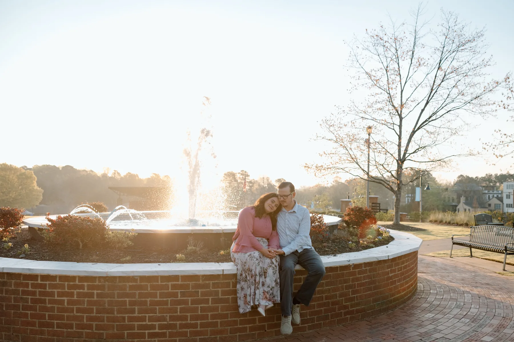
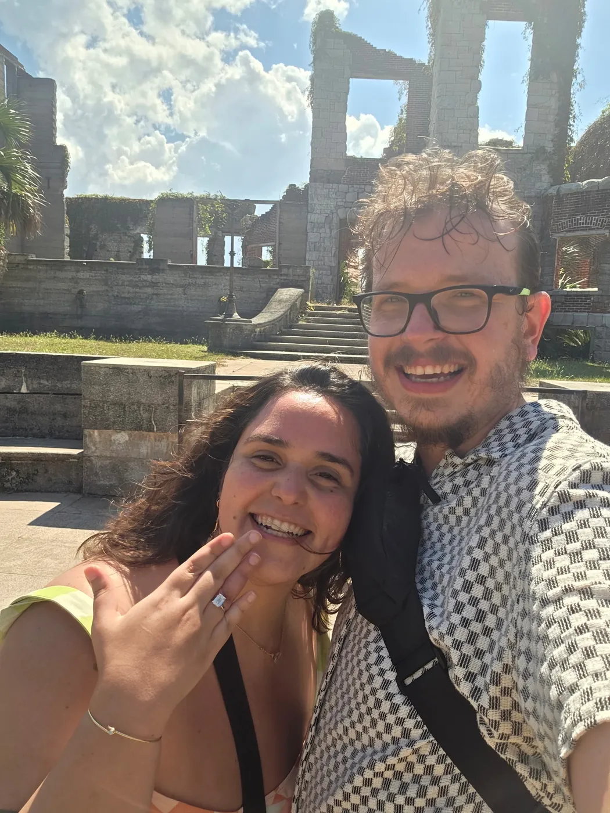
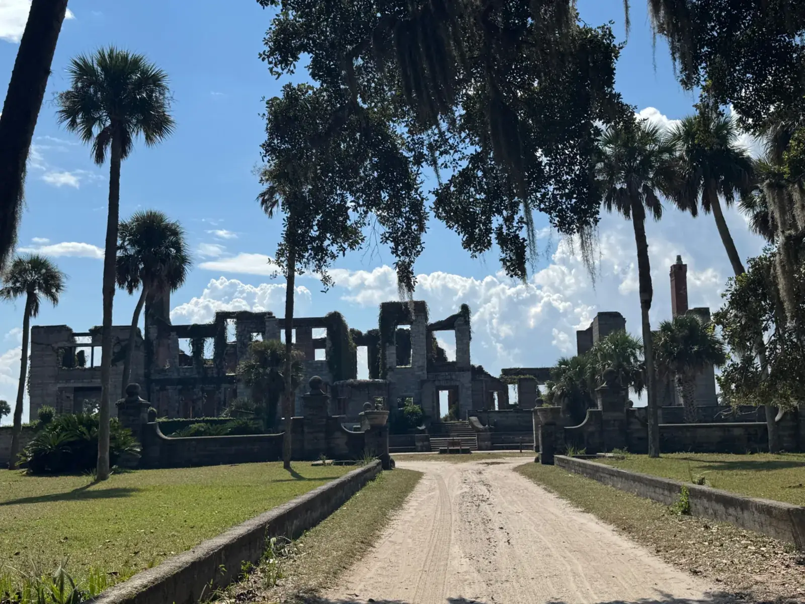
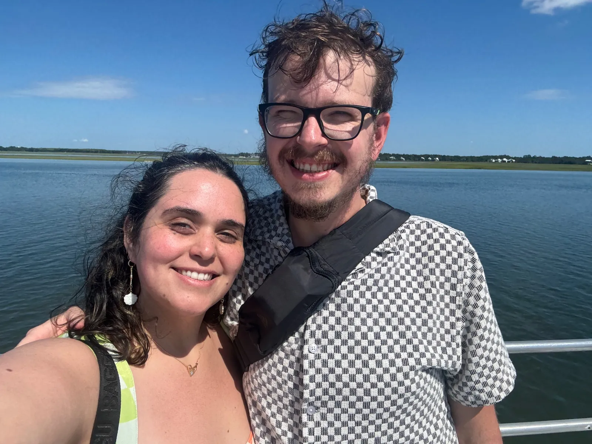
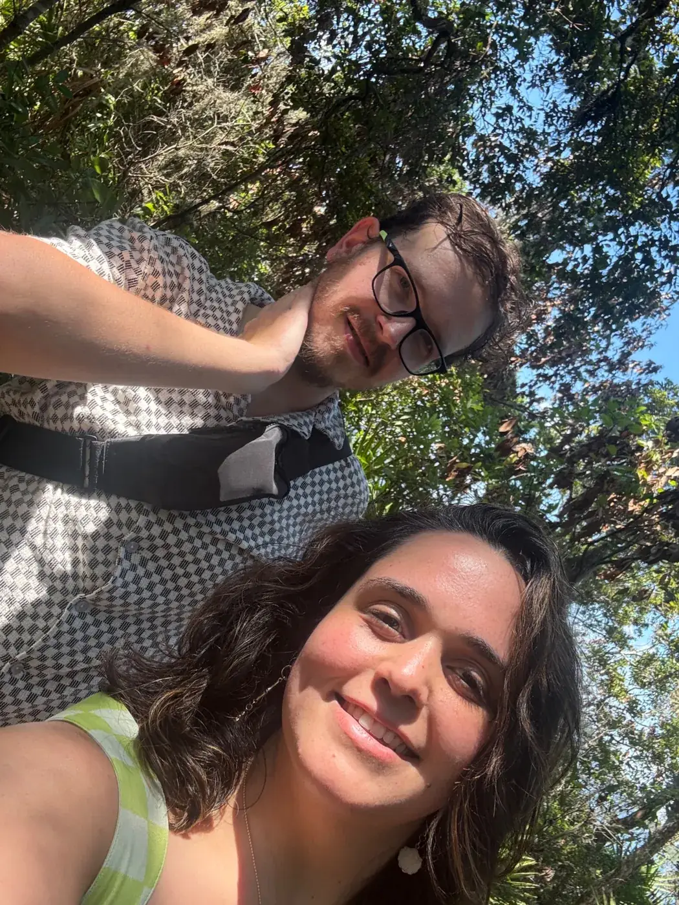
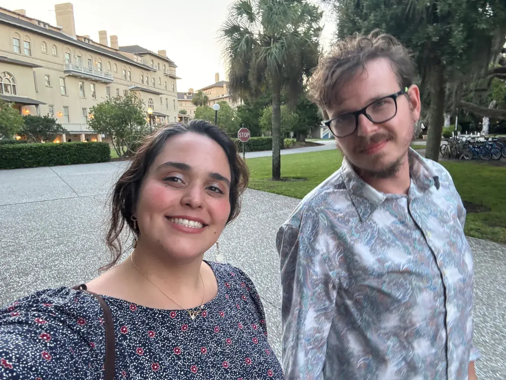
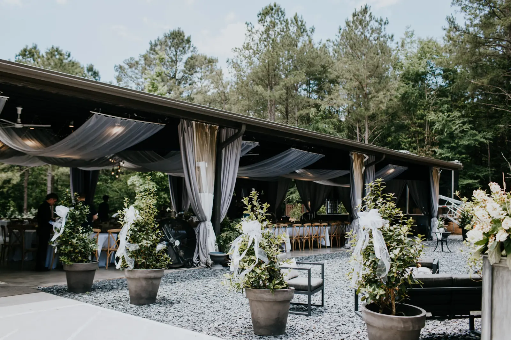
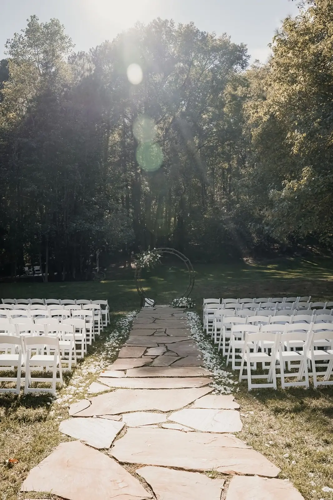
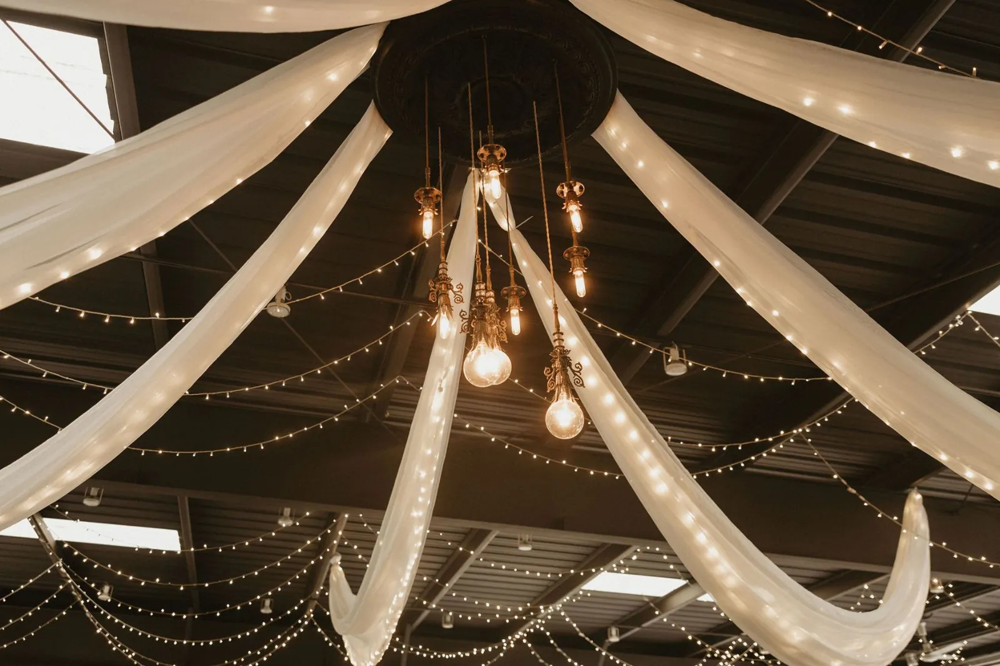
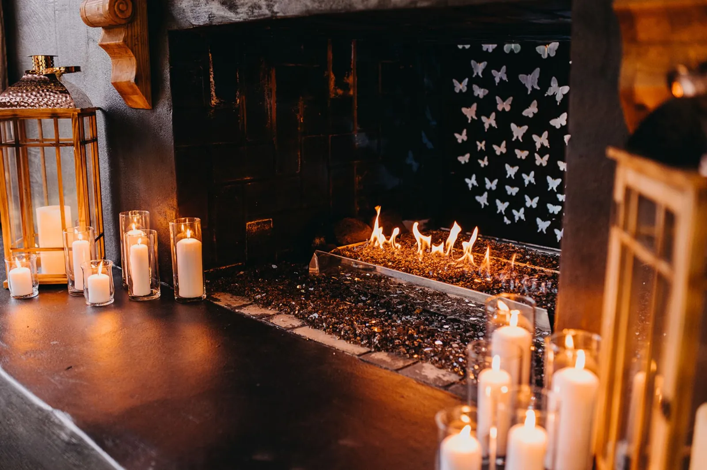

✦ GALLERY ✦











From the engagement trip to Jekyll and Cumberland Island,
and a first look at the Butterfly Pavilion.
More photos as the big day gets closer!
and a first look at the Butterfly Pavilion.
More photos as the big day gets closer!